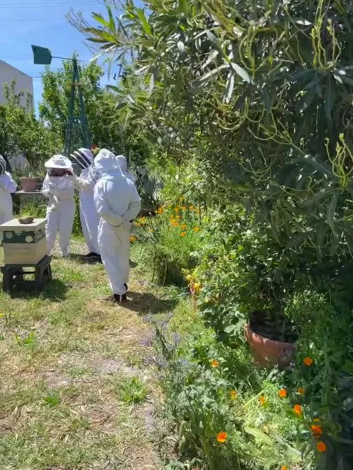
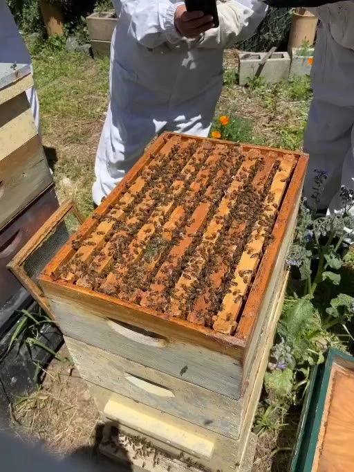
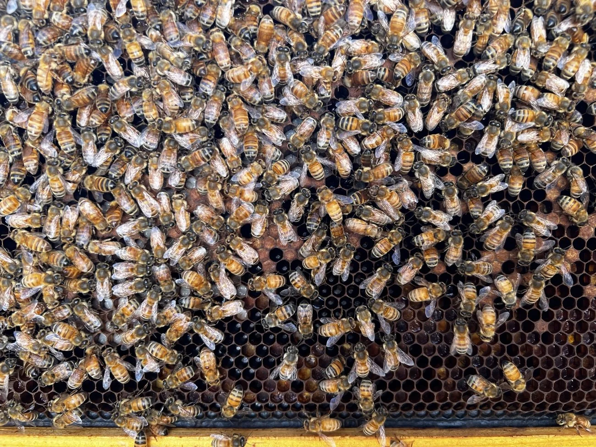
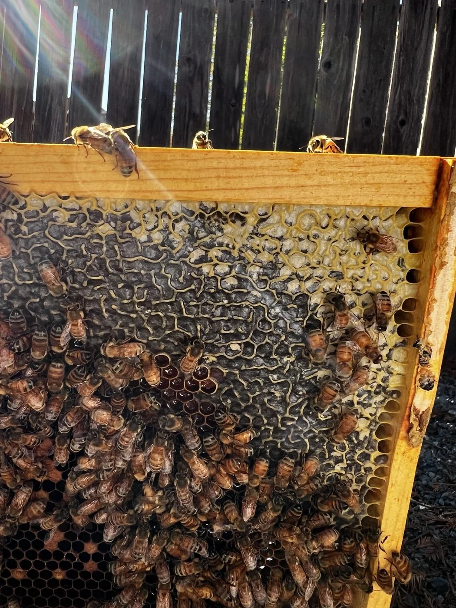
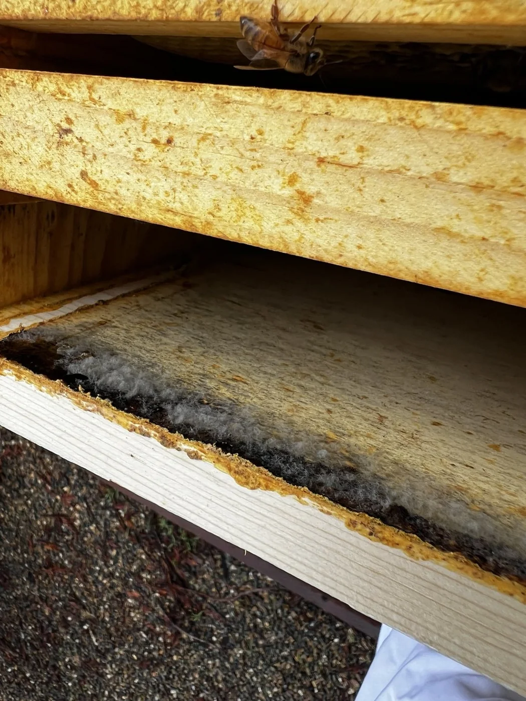
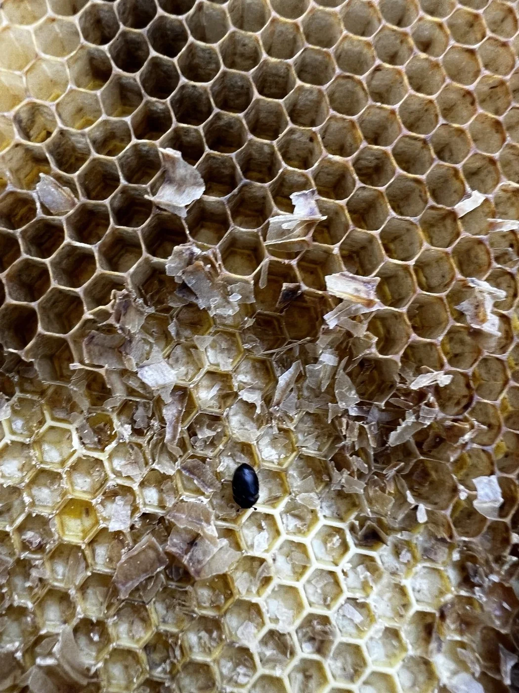
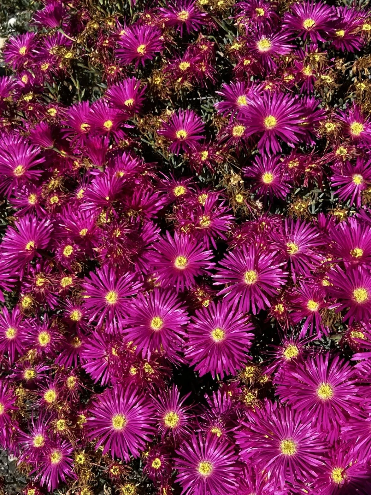
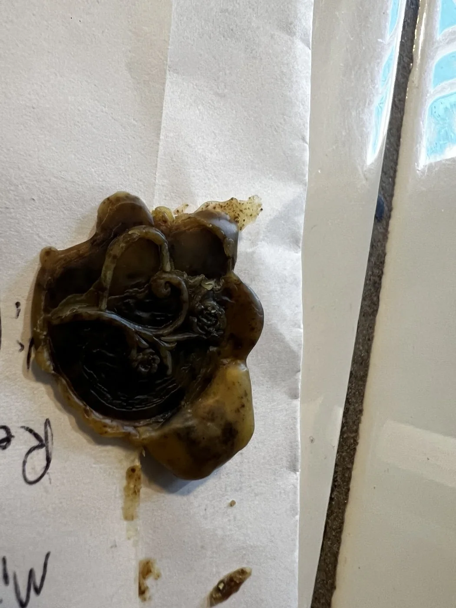
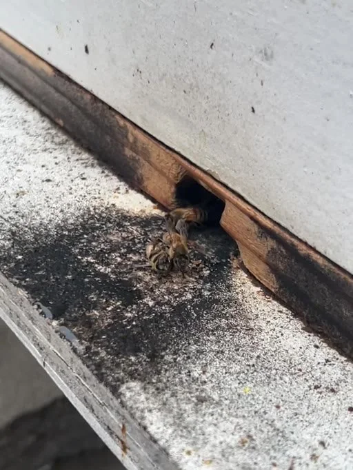

The moment the hive opens
A hive looks almost ordinary from the outside: stacked wooden boxes, a narrow entrance, a little movement at the edges. Open it, and that simplicity disappears. Frames become crowded with bees. The regular geometry of comb sits beside the constant motion of thousands of individual bodies. Everything is happening at once, yet it belongs to a larger pattern.
That contrast is a large part of what draws me to beekeeping. I enjoy the practical work of putting on protective gear, handling equipment, and looking carefully at what is in front of me. But it is the system underneath the work that keeps me curious. A honeybee colony is often described as a superorganism: many individuals carrying out specialized tasks that collectively sustain a functioning whole.
I do not think of a hive as something I can fully control. It is a living community that I can observe, learn from, and try to support responsibly.


Reading the colony, one frame at a time
From a distance, a frame covered in bees is simply a dense, moving surface. Close up, details emerge: workers moving around the rims of cells, open and covered comb, and subtle differences from one region of a frame to another. These are the small details that turn an inspection into an exercise in observation.
The photographs in this report capture real hive work, not a controlled demonstration. Some images show heavy worker coverage; others reveal patterns of comb or the materials lining a box. They are snapshots, not a complete health assessment. I want to get better at connecting those visible details with consistent records of season, weather, food resources, and what changes between visits.
One of my favorite ideas in any hands-on practice is that learning to see comes before knowing what to do. Beekeeping makes that lesson particularly clear.


The hive is full of questions
There is as much to notice around the frames as there is on them. Wood surfaces accumulate resinous material, frames are joined or sealed in places, and comb itself changes in appearance with use. The closer I look, the more often a photograph becomes the beginning of a question instead of the end of an answer.
One close-up shows a small, dark beetle-like insect on exposed comb. I am including it as an example of a detail worth recording and investigating, not claiming an identification or diagnosing a hive problem from one photograph. That distinction matters. Careful documentation is useful precisely because it gives me something concrete to revisit, compare, and learn from.
My aim is to build a more systematic field record over time: what I saw, what I did, what I was uncertain about, and what I learned after looking more closely.


The world beyond the box
A colony cannot be understood entirely by looking inside its home. Flowering plants, water, weather, seasonal transitions, and the surrounding landscape all shape the resources available to foragers. This is where beekeeping connects directly with my interests in gardening, homesteading, and sustainability.
I am particularly interested in how decisions made in a garden affect the living community around it. Flowering habitat can be valuable, but keeping managed honeybees is not the same thing as protecting every pollinator. Native bees and other insects have their own ecological needs, and I want the way I garden to account for them too.
The bright flowers pictured here are a reminder that the story of a hive extends far beyond the wooden boxes themselves.

Making with the materials bees leave behind
Beekeeping also feeds my interest in making things with my hands. Honey is the familiar product, but wax and propolis offer another kind of material education. They behave differently under heat, vary with what has been collected, and require experimentation to make them useful in a craft project.
In one small project, I worked with roughly 1.6 ounces of recovered wax- and propolis-rich material, much of it propolis. I experimented with melting and filtering it, considered candle-making applications, and tried pressing it into a decorative seal. The seal was a successful proof of concept; the experiments also illustrated how a propolis-heavy mixture can behave differently from clean beeswax.
I like this part of homesteading because it closes a loop. Material that might otherwise be overlooked becomes an opportunity to experiment, make mistakes, and learn something tangible.

What would it mean to listen to the hive?
My next area of curiosity is the sound and vibration of the colony itself. Honeybees generate airborne sound and vibrations as they move and interact. I am exploring the idea of recording those signals and translating them into data and visual art.
The concept is simple in outline: capture airborne audio with a microphone, measure structural vibration with a contact sensor, analyze features such as amplitude and frequency, and use those values to drive a changing visualization. I am interested in what a colony might look like if its acoustic activity became motion, shape, or color.
This is still a proposed experiment, not a completed monitoring system and not a validated way to assess colony health. The first goal would be to record responsibly, understand the limitations of the signals, and see what patterns actually appear.
Hive Signals is on the Lab shelf as a coming-soon experiment.

A practice I want to keep documenting
The part of beekeeping I value most is that it rewards patience. There is no single inspection that explains a colony, and no single season that teaches everything. Understanding grows out of comparison, repetition, and learning to distinguish a useful observation from a premature conclusion.
I want this report to become the beginning of a longer record: more consistent hive notes, photographs tied to dates and observations, seasonal reflections, careful material experiments, and perhaps eventually a working prototype for hive acoustics.
Beekeeping brings together many of the things I care about: care for living systems, respect for ecology, hands-on craft, and curiosity about patterns that are easy to overlook. The bees do not need to become a metaphor for every aspect of life. The reality of what they do is interesting enough.
More from the workshop.
Project chronicles and field reports live together on the projects page.